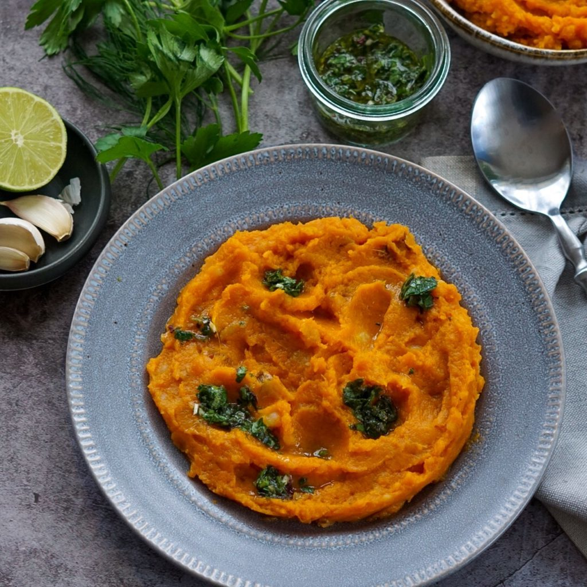

Mashed Sweet Potato with Herb-Lime Salsa

Using only a few ingredients, this vegan dish makes for a great potluck offering or a bright side dish to a heavier meal.
Ingredients
- 2 pounds sweet potatoes, cut in half lengthwise with the skin left on
- 1/4 cup olive oil
- 1/4 basil leaves, finely chopped
- 1/4 parsley or cilantro, finely chopped
- 1 clove garlic, finely grated
- 2 teaspoon lime zest
- 1 tablespoon lime juice
- Salt and black pepper
Directions
- Preheat your oven to 425 degrees.
- Using your hands, cover the sweet potatoes with the oil and season with 1/4 teaspoon salt.
Place the potatoes on a parchment-lined baking sheet, cut side down, and roast for 30-35 minutes or until very soft.
- While the sweet potatoes roast, make the salsa.
Combine the remaining oil in a small bowl with the herbs, garlic, lime zest and juice, and a good pinch of salt.
- Remove the sweet potatoes from the oven and, once cool, scoop the flesh out with a spoon.
Mash the flesh with 1/8 teaspoon of salt and a generous amount of black pepper until smooth.
- Transfer the sweet potato mixture to a bowl and spoon the salsa over top.
Serve hot.